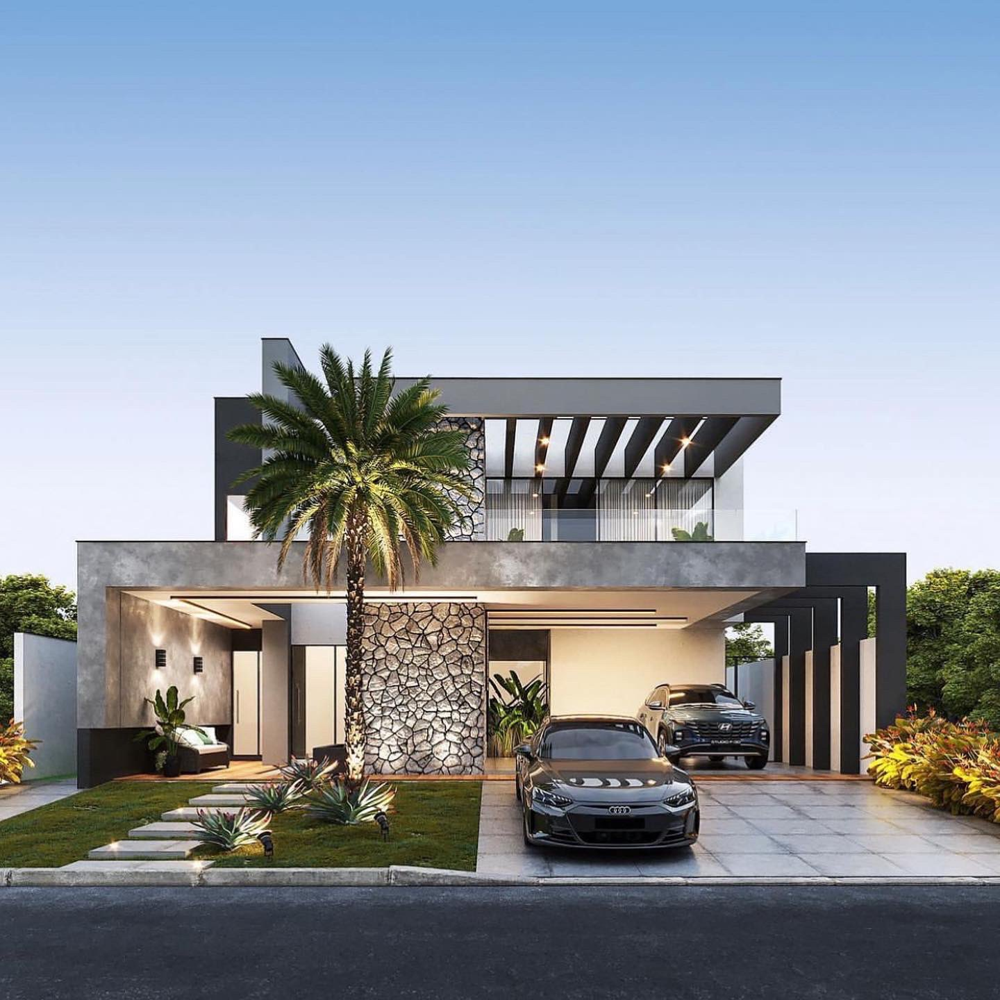
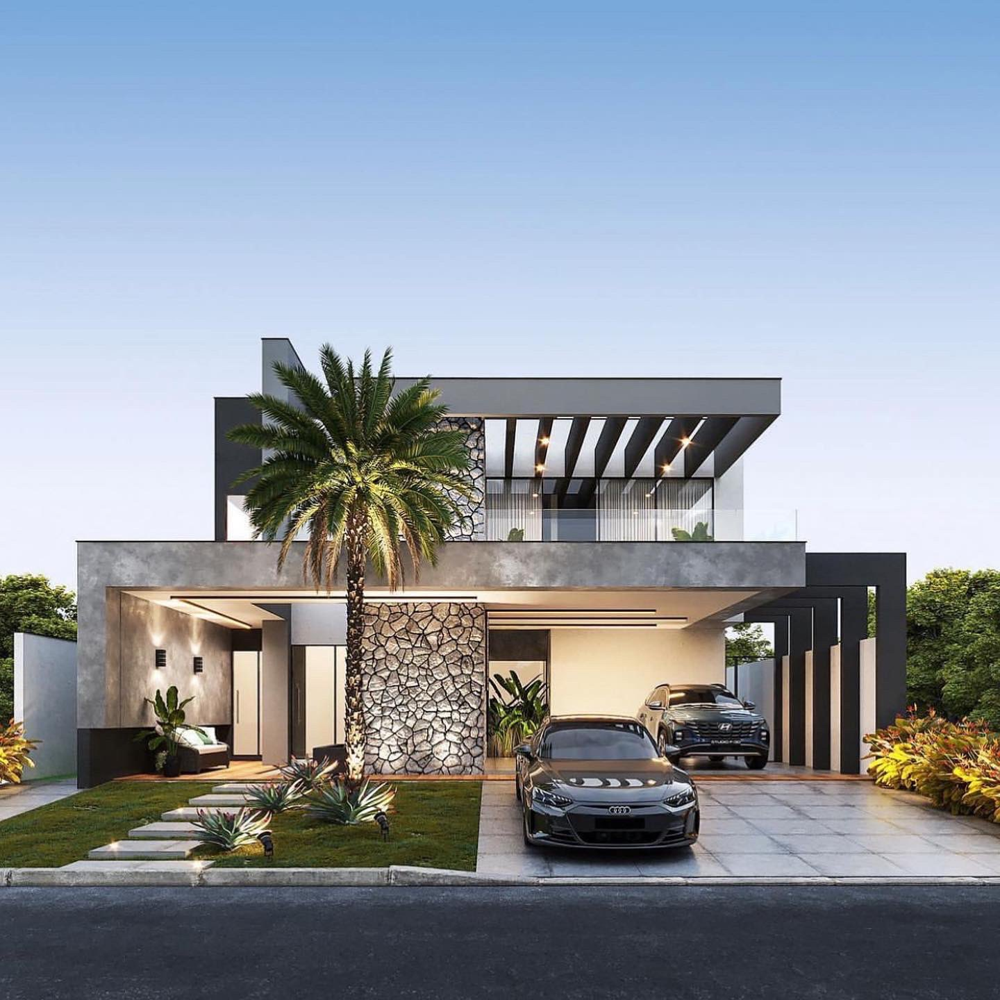

The Walk
The walk from Monterosso to Riomaggiore will take you approximately two hours, give or take an hour depending on the weather conditions and yourphysical shape. ₦1000 ₦3000
The walk from Monterosso to Riomaggiore will take you approximately two hours, give or take an hour depending on the weather conditions and yourphysical shape. ₦1000 ₦3000
Cinque Terre comprises five villages: Monterosso, Vernazza, Corniglia, Manarola, and Riomaggiore.
On the northwest cost of the Italian Riviera, north of the city La Spezia.
The Walk is free!><